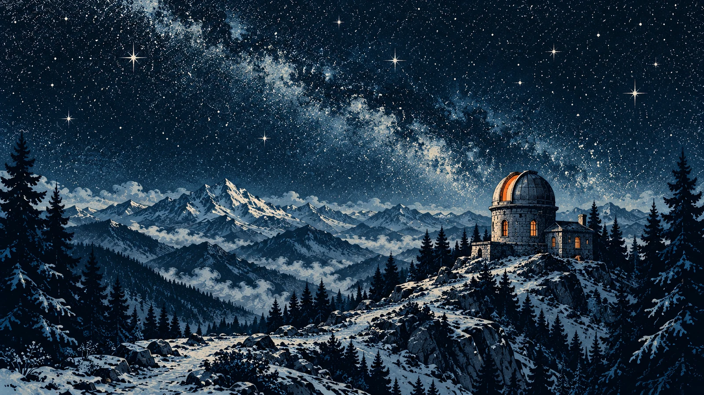

Платформа
Поезд стоял у дальнего края платформы. В первом вагоне горел свет, остальные были тёмными. Я показал билет, поднялся по влажным ступенькам и сел у окна. Проводница прошла по проходу, проверяя пустые места. Весь вагон был моим. Я положил ключ на столик, рядом с бумажным стаканом.
За час до этого я разбирал доставшуюся мне отцовскую квартиру. Он умер в феврале; до этих выходных я приходил сюда только поливать цветы. Хотел освободить стол, включил в розетку старый приёмник и повернул ручку до карандашной отметки. Среди треска прозвучали три коротких гудка и один длинный. Я замер с коробкой на коленях.
Отец стучал так ложкой по чашке, когда звал меня на кухню. Потом научил этому сигналу свой передатчик на обсерватории. Через полчаса гудки повторились. В нижнем ящике лежал ключ с биркой «Южная дверь». Я взял его, куртку и термос. Коробку с посудой оставил посреди комнаты, под висящей лампой.
Стекло
За стеклом тянулись гаражи, освещённые кухни, пустая мойка с распахнутыми воротами. В одной квартире человек поливал цветок. Я успел увидеть, как он отставил кружку, прежде чем окно исчезло за столбом. Потом пошли склады. На стене одного ещё можно было разобрать название завода, где когда-то работал мой дед.
Отец ездил этой линией двадцать семь лет. Был механиком: следил за приводом купола, менял реле, зимой счищал снег с наружной лестницы. Дома от него пахло машинным маслом и яблоками. Яблоки он возил в кармане рабочей куртки, по одному на смену. Иногда забывал, и я находил их на вешалке.
Летом он брал меня с собой. Я засыпал на этом же сиденье, а просыпался уже на горной станции, щекой на его рукаве. Теперь на соседнее место я положил термос. В стекле отражалась пустая половина вагона. Я стёр ладонью запотевший круг и смотрел, как последние дома отступают к низкому краю неба.
Тоннель
Перед тоннелем проводница принесла чай. Я сказал, что у меня свой, но всё равно взял стакан в тяжёлом подстаканнике. Она спросила, разбудить ли меня у Горной. Я ответил, что вряд ли усну. Поезд вошёл в гору. Стекло стало чёрным. Под колёсами глухо загудело, и столик начал мелко дрожать.
Последний раз мы с отцом говорили о кране над ванной. Он объяснял, где перекрыть воду, если опять начнёт капать. Я торопился на встречу и попросил написать. Он прислал фотографию вентиля, обвёл его красным. Эта фотография всё ещё была в телефоне, между расписанием электричек и чеком из магазина.
Я открыл её. За трубами виднелся край зеркала, и в нём его плечо. Наверное, он стоял на табуретке: с пола такого ракурса не получить. Я немного увеличил снимок. Когда тоннель закончился, связь пропала. Я убрал телефон. Чай был уже такой температуры, что его можно было пить большими глотками.

Горная
На станции горела одна лампа. Проводница подала мне термос, который я чуть не оставил на столике. Поезд двинулся; ещё несколько секунд было слышно, как он выбирает слабину сцепок. Потом звук ушёл вниз по долине. На скамье лежали мокрые листья. Я сел, затянул шнурки и достал телефон, чтобы светить.
Тропа начиналась между оградой и закрытым киоском. В детстве здесь продавали круглое печенье. Отец покупал два пакета: один мне, второй людям наверху. Первые повороты я помнил. Дальше пришлось искать след под листьями. По тропе текла тонкая струйка воды; я шёл по сухой кромке, придерживаясь за холодные перила.
Обсерваторию закрыли три года назад. Отец ещё ездил сюда летом, проверял крышу. Я всякий раз собирался с ним и всякий раз откладывал. На последнем подъёме пришлось остановиться, чтобы отдышаться. Из темноты проступил купол. Он оказался меньше, чем я помнил. Под ним темнело узкое южное окно. До двери оставалось совсем немного.
Сигнал
Ключ вошёл туго. Я повернул его обеими руками и надавил плечом на дверь. Внутри пахло деревом, холодной тканью и пылью. На столе лежала раскрытая тетрадь; на стуле висел отцовский рабочий халат. У щита сохранилась записка: «Питание оставлено для метеопоста». Под ней тихо работал блок, собранный ещё до моего рождения.
На панели мигнул зелёный огонёк. Динамик выдал три коротких гудка и один длинный. Я нашёл в тетради схему: ночная проверка линии, затем ожидание света. Раньше этот блок готовил аппаратуру к утренним наблюдениям. Теперь он всё ещё сообщал, что готов. Каждые полчаса, до рассвета. Приёмник дома был настроен на эту частоту.
Я перевернул страницу. Отец разным почерком дописывал сюда ремонты: год, деталь, иногда фамилию того, кто помог. Последняя строчка была о замене кабеля. Рядом с тетрадью стоял кассетный магнитофон. На кассете отец написал моё имя и ниже: «Если приедешь первым». Я проверил шнур, вставил вилку в розетку и нажал кнопку.
Купол
Несколько секунд шуршала лента. Потом отец кашлянул: «Ромка, южную ставню открывай снизу. Верхняя щеколда заедает, я пока не поправил. Сначала чуть на себя, потом вверх. Только не выломай». В записи звякнула ложка. «Чай в левом шкафу. Если раньше меня доберёшься, ставь воду. И стол к окну подвинь. Там утром теплее».
Судя по дате, он записал это в последнее рабочее лето. Мы собирались пожить здесь несколько дней после закрытия. Потом у меня сменился график, поездку перенесли. На ленте он ещё возился с чем-то на столе. Я слушал скрип стула, шаги, короткий вздох. Не стал перематывать этот пустой кусок.
Я открыл ставню, подставил деревянный упор. По узкой лестнице поднялся к телескопу. Рядом с приводом купола было ручное колесо; на стене ещё виднелись стрелки. Я поворачивал его, пока над головой не появилась полоска неба. Потом спустился и достал чай из левого шкафа. Вода в термосе оставалась горячей.
Рассвет
За окном уже различались склон, перила, тропа, по которой я пришёл. Я подвинул стол. На подоконнике лежал выгоревший след от цветочного горшка. Поставил туда стакан и дождался, пока первая полоска солнца дойдёт до моего рукава. Стекло было мутным; на нём ещё можно было заметить два следа от пальцев.
Зелёный огонёк на щите погас. Блок дождался света; следующая проверка будет ночью. За всё это время я ни разу не посмотрел на часы. Допил чай, протёр стекло и убрал со стула халат. Кассету оставил рядом с магнитофоном. Запись была короткой, и я уже знал наизусть, где отец делает паузу.
Лампу у окна я включил. На чистой странице тетради написал, как открыть дверь и где найти чай. Для того, кто поднимется сюда после меня. Ключ положил под навес, на прежний крючок, и притворил дверь. К станции я шёл уже без фонаря. Внизу начинали топить печь; над крышей поднимался ровный дым.
В квартире я убрал коробку с прохода. Приёмник оставил на столе.